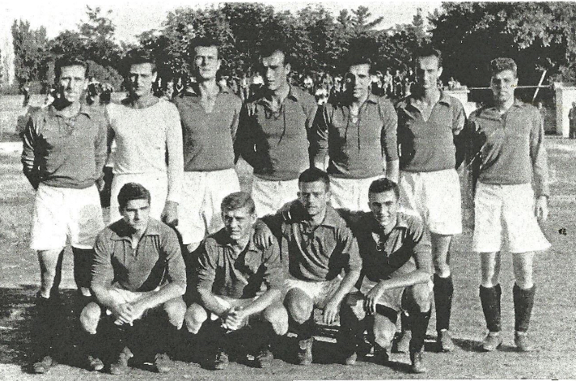
Stoje: Muhamed Mujić, Žarko Barbarić, Sulejman Rebac, Hasan Momić, ---, Anton Bolfek, Hamdija Ćemalović
Čuče: ---, ---, Mensud Dilberović, ---
Sezona 1953-54
Krajem proljetnog dijela sezone 1952-53, Velež je konačno počeo da reda dobre rezultate uz dobru igru. Iako su prema procjenama mnogih novinara već davno ispali (u stvarnosti postojale su teoretske šanse čak i u zadnjoj utakmici protiv Vardara) vladala je pozitivna atmosfera u Mostaru za narednu sezonu, i želja za što brži povratak u Prvu ligu. Dosadašnji trener Bernard Hügl je otišao kako bi postao trener novog prvoligaša Proletera iz Osijeka, a na njegovo mjesto došao je (barem privremeno) Drago Petrović, trener Veležove omladinske škole i jako poštovan veteran i sportski radnik.
Kuriozitet prije početka sezone je predstavljao dolazak Preußena iz Münstera (Zapadna Njemačka) u Mostar. Danas trećeligaši, ova ekipa je ranih 1950tih godina bila jako poštovana momčad koja je 1951. bila finalist u zapadnonjemačkom šampionatu i imala članove zapadnonjemačke reprezentacije u svojoj postavi. Velež je sa njima odigrao dvije utakmice u Mostaru, jednu 27.7. a drugu idući dan. Velež je pobijedio u prvoj utakmici sa rezultatom od 2-0, a izgubio u drugoj sa minimalnih 1-0. Velež je odmah poslije ove utakmice trebao otputovati za revanš u Zapadnu Njemačku, te tokom povratka odigrati utakmicu sa nepoznatim protivnikom iz Austrije, ali do toga nije došlo.
Fudbalski savez Jugoslavije odlučio je da nakon dvije sezone ukine plej-of sistem za Prvu ligu pomoću kojeg je Velež ušao u najveći rang jugoslovenskog fudbala, i da vrati standardni dvokružni sistem za jedinstvenu Drugu ligu. U ovoj novoj sezoni Velež je počeo jako dobro i ofanzivno, ostvarili su 4 pobjede u prve 4 utakmice (uključujući dva republička derbija sa Željezničarom iz Sarajeva i banjalučkim Borcem). Međutim, forma je otpala i pri kraju jesenjeg dijela prvenstva Velež je pao na treće mjesto, što je bilo dovoljan razlog za paniku među Mostarcima.

Dosta ljudi je okrivljeno za loše igre, ali od svih igrača najviše kritika u ovom periodu dobio je Vladimir Zelenika. Lokalne novinare je nervirao zbog njegovog preagresivnog i nesportskog ponašanja tokom utakmica. Iz kolumne od strane Mihajla Šašaroge: "[Veležovi] igrači, u prošlosti, bili su primjer discipline, borbenosti, skromnosti, samokritičnosti i ljubavi. Zar se može govoriti o Zelenici da ide stopama starijih »Veležovih« igrača? Ne može! On zapravo tiraniše svoje suigrače i stvara svojim postupcima u igri i vladanju izvjesnu pometnju, disharmoniju, i nervozu." (Sloboda, 1953). Uprkos svemu, valja spomenuti da je završio sezonu kao ubjedljivo najbolji strijelac u ekipi sa 14 golova, i kao treći najbolji u čitavom šampionatu.
Druga osoba koja je dobila prekomjerne kritike je Drago Petrović, trener ekipe. Došao je u neugodnom trenutku i to kao privremeni trener, ali opet nije zadovoljio, sa njegovim "zastarjelim treninzima" i "nedostatku poštovanja u svlačionici". Već prije godišnje skupštine za 1954. godinu izgubio je svoj posao i Velež je dobio novog trenera, Ivu Radovnikovića iz Splita, koji je tek trebao da se afirmiše kao trener.
Prije nego što je godina počela, godišnja skupština Veleža za 1954. je bila silno isčekivana. Pred stotine navijača u Radničkom domu, a još više direktno izvan njega atmosfera je bila haotična. Veležovi navijači su optuživali članove uprave za slabe rezultate. Neki su pričali generalno o upravi, a neki direktno kritikovali pojedine članove, između ostalih Dušana Pudara, Adila Bijedića i Aliju Šestića. Samo dva aktivna igrača su bila na skupštini, Muhamed Mujić i Hasan Momić, ovaj prvi da iznese javnosti da nije dobio stipendiju te da ubuduće neće trenirati. Bilo je teško doći do riječi i kroz čitavu skupštinu je bilo prisutno nadglasavanje i vikanje ne bi li druga strana progovorila. Ipak, uprkos svemu ovome, 170 navijača je izglasalo novu upravu, sačinjenu od 15 članova, među kojima je 11 od njih pripadalo prošloj upravi.
U prvom kolu proljetnog dijela sezone snage su odmjerili Šibenik i Željezničar. Šibenik je pobijedio 2-1, ali je Željezničar poslao žalbu zato što je za Šibenik utakmicu odigrao Zvonko Erak, koji je tokom polusezonske pauze već potpisao i bio registrovan za Lokomotivu iz Zagreba. Nekad krajem aprila, utakmica je registrovana 3-0 u korist Željezničara, i ova dva boda su na kraju ispala presudna za ulazak u Prvu ligu.
Što se tiče Veleža, prve dvije utakmice su ujedno bile i gostovanja protiv dva slična protivnika po stanju na tabeli, gdje Velež nije uspio da se afirmiše, tako da je samo produbio svoju rezultatsku krizu. Međutim, u narednih 7 utakmica Velež je zaredao 5 pobjeda, i ušao u zadnje kolo na trećem mjestu, sa jednim bodom manje od drugoplasiranog Željezničara. Velež je morao dobiti Branika iz Maribora, koji je bio u grčevitoj borbi za opstanak, dok su Plavi sa Grbavice igrali u gostima protiv Zagreba, koji je već potvrdio plasman u najjači rang jugoslovenskog fudbala. Uprkos visokoj pobjedi od 4-0, i Željezničar je također ostvario pobjedu, te je Velež morao ostati u Drugoj saveznoj ligi.
Napomena o novinskim izvještajimaDa pristupite novinskom izvještaju neke utakmice, kliknite na slovo koje označava pobjedu (P), neriješen rezultat (N) ili izgubljenu utakmicu (I).
Izvještaji su odabrani zaviseći od slučaja do slučaja. Ukoliko imamo više izvještaja za utakmicu, biramo nama najduži poznat izvještaj, bez obzira na izvor ili pristranost pisca.
Izvještaji su napisani tačno onako kako se nalaze u izdanju novina koje koristimo kao izvor, što može značiti da se u njemu nalaze arhaizmi, štamparske greške i ostale neobične pojave. Odlučili smo sačuvati ove pojave bez popravke kako bi olakšali sebi, i ne ulazili preduboko u "uređivačku politiku". Ipak, ovo je projekat gdje je premal broj ljudi da uredno pregledavaju gramatiku a da se pisanje istih izvještaja ne oduži, tako da je moguće da smo sami napravili određene greške pri "digitalizaciji" sadržaja. Ukoliko ste primjetili takvu grešku, slobodno je prijavite u našim kontaktima.
Kao osnovni minimum za pojavu nekog članka na ovoj stranici, moramo znati koji je njen izvor. Ovo može biti informativna agencija, novine ili elektronski mediji. Još bolje ako znamo tačno ko je autor izvještaja po imenu i prezimenu. U tom slučaju pišemo ime i prezime bez obzira da li su pripisani po punom imenu ili ne (npr. A. H. će postati Asim HADŽAJLIĆ, i S. Ibrulj će postati Saša IBRULJ.). Ovo naravno samo važi ako znamo "od inače" ko je autor djela. Ako imate informaciju o autoru bilo kojeg članka ili više članaka, također je pošaljite u naše kontakte.
Ovaj čitav projekat zavisi od medija na jedan ili na drugi način. Kao takav podložan je autorskim pravima i volje originalnog autora ili agencije zaslužne za štampanje teksta. Ukoliko ne želite vidjeti vaš tekst ili tekst na koji polažete pravo na ovoj stranici, obratite se našim KONTAKTIMA.
Dobar početak
„Velež” — „Napredak” (Kruševac) 3:0 (0:0))
Prije početka utakmice, usljed nepoznavanja protivnika, većina »Veležovih« navijača smatrali su da će gosti lako »legnuti«. Međutim, malo je trebalo pa da budu pobjednici. »Velež« je slabo počeo. Kod njegovih igrača osjećala se neka nesigurnost ili je to bila trema. Možda je do takvog stanja došlo usljed slabog branjenja Đuričića, koji je već u samom početku ispuštao lopte. Da je navalni red protivnika bio malo snalažljiviji i efikasniji mogli su doći do pobjede. Igrali su dobro u polju. Išli su na svaku loptu i među njima ima dobrih pucera. Lako su dolazili do blizine »Veležovog« gola, ali tada nisu znali realizovati svoju nadmoćnost. U završnicama mnogo su oklijevali.
Skoro cijelo prvo poluvrijeme bili su ravnopravan protivnik, pa čak su bili i u lakoj nadmoćnosti. »Velež« je bio prisiljen da se brani. Gotovo punih dvadeset minuta, odbrana »Veleža« imala je mnogo posla, ali je ipak uspješno izvršila zadatak.
U ovom dijelu igre nije bilo smišljenih i korisnih akcija. Obadva tima ličila su na nižerazredne ekipe. Pravili su početničke greške. Igra nije bila ni dopadljiva.
Tek u drugom poluvremenu dolazi do obrta. Odmah se moglo opaziti kod obadva tima riješenost na pobjedu. Dok se gosti ističu borbenošću, dotle »Velež« sređuje svoje redove i izvodi nekoliko prodora. Tim je počeo igrati homogeno i brzo su prodirali prema protivničkom golu. Nižu se uzbudljive situacije, Veležova ekipa nadmašuje svog protivnika u tehničkoj igri. Napokon, poslije nekoliko napada, »Velež« dolazi u vođstvo preko Ćemalovića. Gol je postignut poslije jedne smišljene i brze akcije. Do lopte je došao Hrvić, koji prebacuje Mujića, a ovaj prelazi jednog pa drugog protivničkog igrača i prisebno je dobacuje Čemaloviću koji je sa strane ubacuje u mrežu.
Ovaj je gol probudio navijače »Veleža«. Počeli su kolektivno da bodre svoju momčad. »Velež« se razigrao, ali ni protivnik ne popušta. Zahvaljujući dobroj kondiciji i borbenosti uspješno pariraju. Ubrzo je pao i drugi gol, takođe poslije jednog prodora. Ovog puta Selimotić u brzom sprintu uspijeva da se probije i poluvisoko ubacuje loptu u centar na koju pritrčava Zelenika i glavom je skreće u gol. Poslije ovoga gosti izvode protunapade, ali u završnicama nemaju sreće. Simpatična je sa njihove strane borbenost. Treći gol postigao je Zelenika, opet poslije prodora.
Sve u svemu najbolja je kod Veleža bila halflinija. Ona je bila ta koja je sprečavala svaku protivničku navalu. Navalni red nije u potpunosti zadovoljio. Više se radilo preko Selimotića, nego preko Ćemalovića. Istina, ovaj je često napuštao svoje mjesto, pa i onda kada to nije bilo potrebno. Golman je u početku bio nesiguran, ali je ipak kasnije odbranio nekoliko opasnih šuteva. Odbrana je donekle zadovoljila.
Ovoga puta »Velež« je imao sreće, ali treba uložiti mnogo truda da postignu ono što su posjedovali prije nekoliko mjeseci.
Sudija Perović sudio je sa manjim greškama.
Mihajlo ŠAŠAROGA
Sloboda
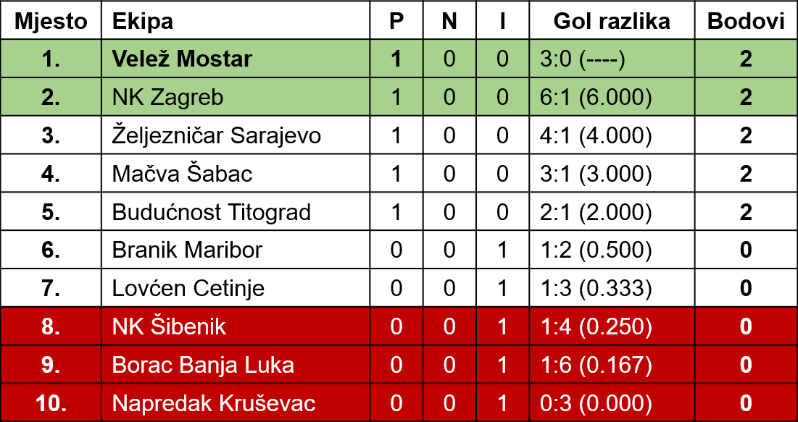
Druga visoka pobjeda „Veleža” u Mostaru
„Velež” — „Budućnost” 4 : 0
I u drugom susretu za takmičenje II futbalske lige, »Velež« je zabilježio sigurnu i visoku pobjedu nad vrlo jakim protivniko. Ovoga puta to je bila ekipa požrtvovnih Titograđana, iskusna ali ne i dovoljno jaka da be se efikasno mogla suprostaviti mnogo boljem timu »Veleža«. Većina simpatizera i navijača očekivali su pobjedu domaćeg tima, ali nije niko pokušao prognozirati ovakav rezultat kakav je polučen. Domaći tim prikazao je igru kakvu odavno nije. Prvi okršaj pokazao je da se želi visoko pobjediti protivnika. I zaista dalji tok igre te i konačan rezultat je to dokazao. Ovo je mogla da bude još ubjedljivija pobjeda da gosti sem svoje oštre odbrane na svojim vratima nisu imali odličnog i požrtvovnog mladog golmana Dedovića. On je u nedjelju sigurno branio svoja vrata, odolijevao skoro uvijek teškim udarcima i čestim navalama razigrane navale koja je stalno opsijedala gol gostiju. Golman Dedović osvojio je ogromne simpatije mostarske publike.
Igra je čitavo vrijeme bila lijepa i uzbudljiva
Pošto je tim »Budućnosti« izveo prvi udarac u drugom minutu, Darmanović I ubacuje slobodnom Radonjiću koji neometan ni od koga silovito tuče, ali Momić krajnjim naporom odbija. Degažiranu loptu Hrvić sa lijevog krila prosljeđuje slobodnom Mujiću koji odmah tuče, ali se lopta odbija o prečku. Još jedna prilika gostima. Popović prima loptu oko sredine terena, lijepo poslužuje Zečevića a ovaj slobodnog Radonjića koji tuče pored samog gola u aut.
To je bila i posljednja povoljna prilika gostima. Domaći tim preuzima igru i zadržava sa pritiskom do kraja prvog dijela. Odmah u 10 minutu dolazi do prvog gola. Sa lijeve strane Ćemalović izvodi aut, Mujić kroz noge nekoliko protivničkih igrača vrlo spretno daje Hrviću koji je ubacuje u gol pored palog Dedovića. Sedamnaesti minut zamalo da nije doveo do povećanja rezultata. Selimotić je prešao Methadževića dodaje slobodnom Ćemaloviću koji lijepo tuče ali Dedović boksuje u korner, koji ostaje neiskorišten. Slično je bilo i u 31 minutu. Radiljević nekoliko puta dribluje Darmanovića a Mujić dobivenu loptu tuče u sami ugao — opet golman sigurno brani. U sljedećem minutu opet jak udarac, Lopta ulazi u gol ali se opet tu nalazi Petrović koji loptu glavom izbacuje u korner. Dakle mnogo udaraca malo golova.
Igra preko krila i serija golova
Što »Veležu« nije uspjelo u prvom dijelu igrom kroz sredinu, donekle je uspjelo u drugom. Igra preko vrlo dobrih krila Selimotića i Ćemalovića po mojem mišljenju donijela je »Veležu« visoku pobjedu. Dok su u prvom dijelu oni bili malo uposleni i često puta ulijetali u sredinu da bi se domogli lopte, u drugom oba krila imala su pune ruke posla. Ipak Selimotić ga je bolje obavio jer je pored sebe imao malo nesigurnog Petrovića te ga je skoro uvijek uspijevao da pređe i lijepo ubaci loptu u sredinu. Sva tri gola postignuta u drugom dijelu najveća su zasluga brzih i požrtvovnih krila. U osmom minutu Ćemalović je poslužio Hrvića koji postiže gol, a u 15 Selimotić Ćemalovića koji udarcem u ugao primorava Dedovića da po treći put vadi loptu iz mreže. Samo tri minuta dijelilo nas je od posljednjeg gola. Nakon što je Petrović jednu tučenu loptu odbio, Mujić pritrčava i sabrano tuče — gol. Do kraja »Velež« je imao dosta prilika ali rezultat je ostao isti. Ipak to je jedna vrijedna i lijepa pobjeda koja je omogućila bivšem prvoligašu da nakon drugog kola sigurno povede na čelu tabele, a da li će da tu prednost održati zavisi od toga najviše kako će shvatiti susrete pa makar i sa slabim protivnikom.
Nešto o sudiji i prekršajima
Voditi ovu utakmicu nije bilo teško. Pa ipak sudija Makijedo svoj posao nije obavio u potpunosti, ni dobro. Prekršaji teže prirode kao što ih je pravio Popović nad Hrvićem i Darmanović nad Momićem, kada ovi nisu imali kod sebe loptu, morali su se oštro kazniti. Pa kako onda suzbijati nezdravosti kod pojedinih futbalera, ako to ne nastoje oni koji su zato i najodgovorniji, i najpozvaniji. Ovaj slučaj treba da posluži kao primjer lošeg vođenja utakmice.
M. PREMILOVAC
Sloboda
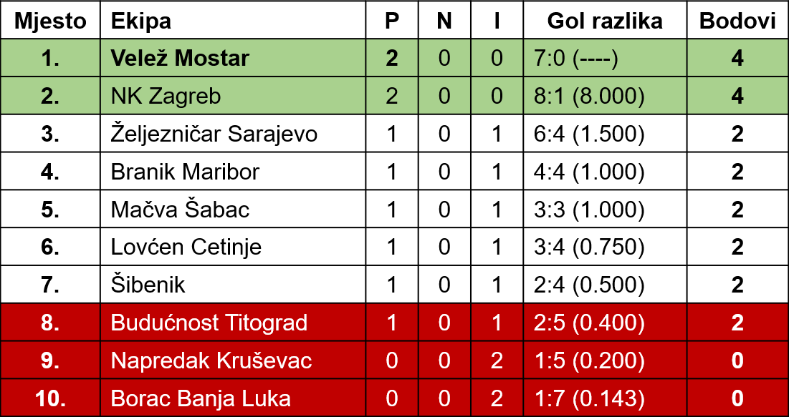
U Sarajevu:
Velež - Željezničar 5 : 3
Domaći su propustili priliku, da odluče ovu utakmicu u prvih pola sata, kada su gosti igrali vrlo ležerno. U tom periodu Željezničar je bio terenski potpuno nadmoćniji, što se može zaključiti i po tome, da je za prvih pola sata igre pred golom Veleža izvedeno čak sedam kornera.
Gosti su u jednom napadu uspjeli postignuti vodstvo. Kasnije su preuzeli inicijativu. Tako su završili do kraja prvog dijela, a kada je u nastavku pao i drugi zgoditak, Velež je sasvim zagospodario terenom. Tek nakon 3:0 domaći su se trgnuli i uspjeli u kratkom razmaku smanjiti na 2:3 Tada je ponovo nastao period nadmoćnosti Mostaraca, koji su uspjeli postići još dva zgoditka. Do kraja utakmice domaći su još uspjeli samo da smanje poraz na 5:3.
Pobjeda gostiju je zaslužena, ali rezultat ne daje pravu sliku stanja na terenu. To je bila izjednačena igra u kojoj su domaći imali čak i više šansi. Krivnju za poraz snosi golman Babić, Kočan i Dugonjevac.
M. PODBOJ
Narodni sport
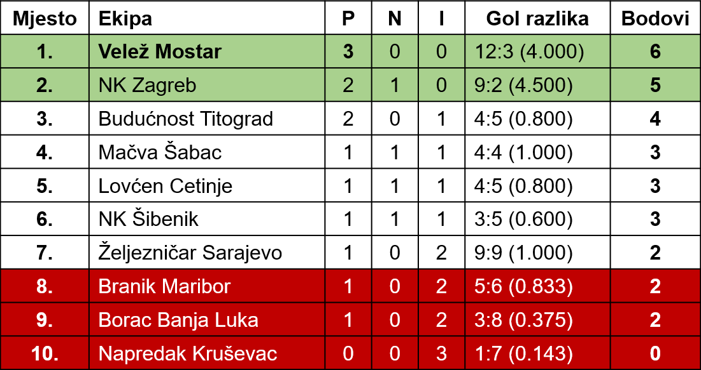

"Hrvić postiže drugi gol za »Velež«. Gol man Đurić uzalud se bacio" (Foto: Oslobođenje)
U ravnopravnoj igri
Mostarci efikasniji
»Velež« - »Borac« 4:2 (2:2)
Gotovo sva predviđanja za današnju utakmicu pokazala su se kao tačna. Vrijeme se nije popravilo, pa je utakmica odigrana pod jakim vjetrom koji nije dozvoljavao nijednoj ekipi da razvije normalnu igru. Ali je obostrana borbenost, a naročito »Borčeva« bila takođe velika. Ona je u ovoj utakmici, koja je oskudijevala u lijepim kombinacijama davala zanimljiv ton i uzbudljivost, a i sam tok rezultata, koji se ovako kretao: 1:0, 1:1, 2:1, 2:2, 3:2, 4:2 za »Velež«, održavao je napetost na utakmici. Jedina stvar, koja se nije ispunila, to je vjerovanje Mostaraca da će njihov pretstavnik u nadmoćnoj igri odnijeti ubjedljivu pobjedu nad »Borcem«. Naprotiv, Banjalučani su bili ravnopravan protivnik, koji je imaomožda, malo više od igre u svojim rukama.
Od šest golova posljednji najljepši
Seriju golova otvorio je Mujić. Nakon jedne gužve u kaznenom prostoru »Borca« prvo je pucao Rebac, a odbijenu loptu Mujić je sa sredine spoveo u gol. Tek 28 minuta kasnije, naročito je »Borac« izveo više napada, Spaho je uputio jednu loptu prema »Veležovom« golu, a bek Rukavina, u namjeri da degažira, nespretno ju je sproveo u vlastiti gol i time izjednačio. Ponovno voćstvo »Veležu« donio je Hrvić na sličan način kao što je to učinio kod prvog gola Mujić. Izjednačio je Tešanović iz slobodnog udarca u 40 minuti igre, nakon što je Bolfek, 25 metara od gola, srušio Švraku. Đuričić bi, vjerovatno, odbranio šut Tešanovića da ga vjetar nije prevario i zanio loptu. U drugom poluvremenu Mujić je ponovo dao vodeći gol za »Velež«. I, konačno pred sam kraj igre jedan veoma lijep šut Hrvića: sa desne strane kaznenog prostora on je uputio loptu u desni ugao gola, tako da je Đurić bio nemoćan.
»Velež« je razočarao i može se slobodno reći da se »Borac» na današnjoj utakmici pokazao kao ravnopravni protivnik »Veležu«, i da je odbrana »Borca«, naročito halflinija Spaho — Šijaković — Jurić briljirala na terenu. »Velež« je igrao slabo, slabije nego u Sarajevu. U njegovom timu treba istači Momiča, Radiljevića, Mujića i Hrvića koji su na svojim leđima iznijeli pobjedu. Među najslabijim na terenu bio je centarfor Zelenika, koji se, uz to, i drsko ponašao prema svojim drugovima i publici.
Sudija Stefanović dozvolio je oštriju igu nego što je uobičajeno.
P. LUKAČ
Oslobođenje
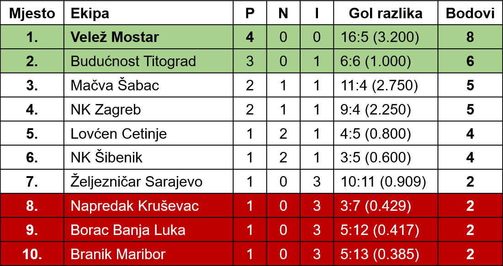
Prvi poraz Mostaraca
Mačva-Velež 2:0 (2:0)
Početni udarac izveli su domaći, ali su ubrzo »Veležovci« preuzeli inicijativu i sa lakoćom u prvih 15 minuta gospodarili terenom. Igrali su jednostavno, brzo, i forsirali svoja prodorna krila, naročito Repca, pa se, prema početku, očekivala pobjeda gostiju. Izgledalo je da će »Velež« lako izaći na kraj sa ovim opasnim konkurentom. Ipak, te navale nisu uspijevale zbog oprezne i oštre igre domaćih odbranbenih igrača. Pored toga, navalni igrači »Veleža« su oklijevali baš u otskudnim časovima pred golom Šapčana, tako da golman »Mačve« čak nijedanput nije intervenisao. Kad se očekivalo da će »Veležovci« postići zgoditak, dogodio se iznenadni obrt. Jedna neopasna lopta pošla je prema golmanu Mostaraca Đuričiću i on je nespretno intervenisao, ispustivši je, a igrač »Mačve« Ivoš samo je potvrdio gol glavom. Tada su domaći, ponijeti bodrenjem svoje publike, iz jedne vrlo lijepe i brze akcije preko Grujičića postigli i drugi zgoditak. Poslije ovog događaja, pa do kraja utakmice, nema se šta naročito lijepo i pohvalno reći ni o jednom timu. Za takvu rastrganu i nesređenu igru treba »odati« priznanje sudiji Barjaktareviću koji je sigurno svaki minut bar jedanput upotrebio svoju pištaljku za »prekršaj«. Nisu to bile baš takve greške, ali eto on je htio da bude izgleda najzapaženiji čovjek ove utakmice. I uspio je u tome, jer gotovo nijedan igrač poslije drugog gola nije ostao do kraja utakmice pošteđen od opomena sudije Barjaktarevića. Osim toga, poništio je jedan gol Hrvića, koji je bio potpuno regularan.
Kao i na dosadašnjim utakmicama, »Velež« je ušao u igru superiorno, siguran u svoju pobjedu. Ali, nije to bila ona ekipa koja je dosada svojom borbenom igrom odnosila pobjede. Danas se igralo mlitavo, bez zalaganja, naročito u navali. Nije bilo one poletne igre koja je krasila igrače mostarskog ligaša i donosila im pobjede. Naprimjer, danas je Zelenika driblao često do iznemoglosti. Imao je povoljnih prilika da puca na gol, a nije to činio. Bilo je slučajeva kada je Zelenika mogao da idealno posluži svoga suigrača, ali on je zadovoljavao svoje prohtjeve, driblajući.
Haldun HRVIĆ
Oslobođenje
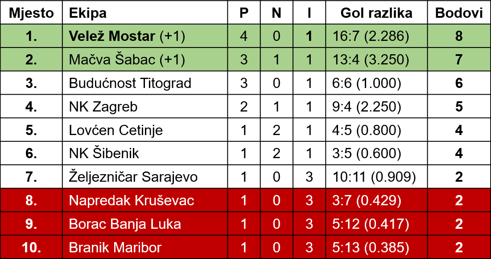
„Velež” - „Lovćen” 2:1 (2:1)
Na nedeljnoj utakmici »Velež« je nastupio sa izmjenjenim timom. Umjesto Momića, koji nije mogao igrati radi povrede noge, na mjestu centerhalfa igrao je Bolfek, a Ćemalović je došao na mjesto halfa, dok je na krilu igrao Selimotić. Zelenika je i ovog puta vodio navalu domaćih.
Prva minuta igre pripala je gostima. Oni izvode jedan opasan napad, ali bez uspjeha. Poslije toga Zelenika se našao u pogodnoj situaciji da postigne gol, jer se našao oči u oči sa golmanom, ali je tukao pored gola. U trećoj minuti, poslije jednog prodora, Rebac je postigao prvi gol. On je sa centra poveo loptu vrlo brzo se našao pred protivničkim golom i iz blizine od 4—5 metara neodbranjivo tukao u mrežu...
Za skoro čitavo prvo poluvrijeme može se reći da je igra bila ravnopravna. Gosti su u tom dijelu izveli nekoliko opasnih prodora i često su pucali na gol. Jedno kraće vrijeme bili su lako nadmoćni. U vrijeme njihove nadmoćnosti, domaći izvode napad kojeg Rebac pretvara u gol. Poslije toga gosti se trude da smanje rezultat. To im je kanačno uspjelo u 25 m. Mosuđen je korner protiv »Veleža« i poslije pucanja stvorila se gužva iz koje Vrbica postiže gol.
Iza toga igra je bila vrlo slaba. Obadvije ekipe popustile su u svojoj borbenosti i nije bilo uzbudljivih momenata.
Drugo poluvrijeme nije naličilo na prvo. Ovog puta »Velež« je počeo da izvodi napad za napadom. Svakog momenta njegovi igrači pucali su na protivnički gol , ali nisu imali sreće. Rezultat je ostao nepromjenjen. Lopte su postajale plijen golmana ili se tuklo pored gola i čak u stative. Takvi siloviti napadi trajali su dobrih 30 minuta. Domaći su naprosto opsjedali protivnički gol, ali lopta nije htjela nikako da uđe u mrežu. Preostalih 15 m. igra je uglavnom bila ravnopravna.
Prema igri, protivnik nije bio baš kako se očekivalo. Naprotiv, to je tim koji se zna boriti i da je njegova navala bila efikasnija mogli su vrlo lako da iznenade.
Kod domaćih su bili najbolji: Mujić i Radiljević, dok su ostali igrali kao i obično. Zapazilo se kod nekih igrača da ne idu na prvu loptu. Ovo naročito važi za Bolfeka. Zelenika je na ovoj utakmici bio nešto bolji nego na zadnjoj utakmici, ali ni izdaleka prema svojim mogućnostima. Selimotić je udovoljio. Hrvić je podbacio. Rebac je baš kao i obično čekao gotovinu. Njemu nedostaje borbenosti pa da bude zaista jedan od boljih igrača.
Kod protivnika najbolji je bio Pajević i uža odbrana.
Ova utakmica opet je potvrdila da navala »Veleža« nije bila esikasna i da se nije igralo homogeno, iako to neki tvrde.
Sudija P. Mrkobrad sudio je dobro.
Sloboda
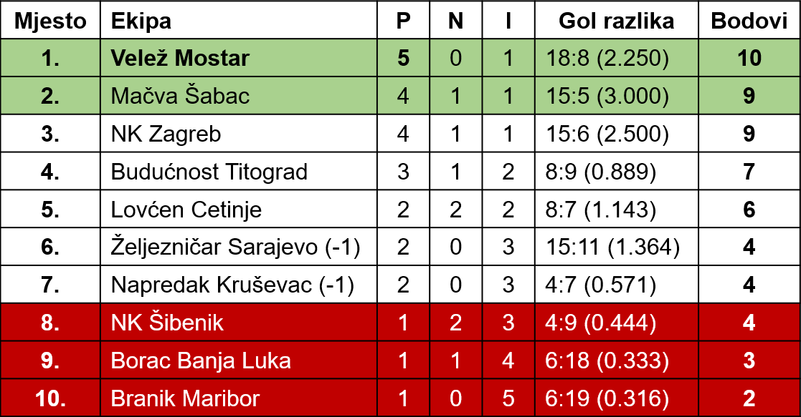

"Vođa navale Zagreba Jagodić uspješno je nastupao protiv Veleža. Na slici u borbi s Momićem" (Foto: Narodni sport)
„Zagreb” — „Velež” 2:0 (2:0)
Slaba igra Mostaraca
Derbi susret Druge lige završio se sigurnom pobjedom „Zagreba” od 2:0. Očekivalo se da će „Velež”, poslije slabijih igara na posljednjim utakmicama, zaigrati bolje protiv „Zagreba” — kandidata za prvo mjesto u Drugoj ligi. Iako su Mostarci došli u Zagreb bez Repca i Selimotića, smatraće sačuvati tradiciju i vratiti se iz aZgreba neporaženi.
Međutim, ovoga puta „Velež” je igrao sasvim slabo i nekorisno i nije opravdao povjerenje koje uživa kod zagrebačke publike. Kroz čitav period utakmice Zagrepčani su bili zrelija ekipa, igrali su tehnički bolje, jednom riječju, bili su ekipa koja zaslužuje da se povrati među prvoligaše. Na drugoj strani, Mostarci su se sasvim razlikovali od njih. Bili su nesređeni, pojedinci su nastojali da igraju individualno i ekipa se nije osjećala kao kolektiv. To naročito važi za navalni red, koji je potpuno podbacio.
U cjelini, utakmica hje bila slaba. Lopta je bila češće kod domaćih i njima pripada uglavnom veći dio igre. Mostarci su forsirali igru kroz sredinu, gdje je sigurni centarhalf Klaić budno pazio na svaki pokret „Veležove” navale.
Prvi gol, koji je postigao „Zagreb”, bio je plod jedne smišljene kombinacije koja je počela od sredine igrališta. Kada je lopta bila ubačena u kazneni prostor, tu se našao Jagodić, neometan od svoga čuvara Momića, i odmah poslao loptu pored nemoćnog golmana. I drugi gol pao je greškom Momića. Umjesto da pusti jednu neopasnu loptu, kojoj je pošao u susre Đuričić on joj je promjenio pravac i lopta, umjesto da bude u rukama golmana, našla se u mreži.
Osim postignutih golova, domaći nisu imali zrelih šansi, izuzev kad je Bolfek, poslije gola, skrenuo loptu aslobodnom Jagodiću.
Pred kraj utakmice sudija Podupski isključio je iz igre Hrvića zbog prigovaranja. Inače je vrlo često griješio.
Haldun HRVIĆ
Oslobođenje
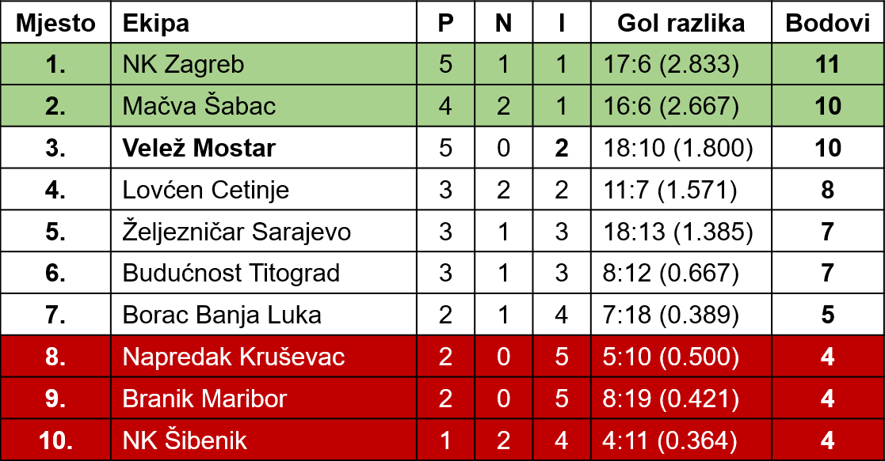
„Velež” - „Šibenik” 2:0 (2:0)
Ljubitelji „Veleža” napustili su u nedjelju igralište sa izvjesnom zabrinutošću. Mnogi su u sebi postavljala ova i slična pitanja: — Dokle sa ovakom igrom? Nešto nije u redu kod „Veleža”? Pobjeda je postignuta ali je ona mogla biti dovedena u pitanje. Ukratko, Velež je razočarao.
Kroz cijelo vrijeme igre opažala se nehegemonost u igri. Dok je halflinija odlično funkcionisala, dotle je navalni red potpuno podbacio. Zelenika je upropaštavao šansu za šansom. Rebac je čekao „gotovinu”, Selimotić je lutao, Mujić je više trčao i poveo se postupcima Zelenike. Sve u svemu neozbiljna igra za koju bi se moglo reći da je najlošija u Mostaru unazad nekoliko posljednjih godina.
Uopšte uzevši Velež je imao sreću. Da su gosti igrali korisnije, da su jednostavno imali dobre pucere oni bi bili pobjednici. I pored toga što su gosti igrali dobro u polju nisu u završnim akcijama pokazivali dovoljno okretnosti.
Uglavnom je Velež igrao podređenu ulogu, izuzev jednog dijela prvog poluvremena kada su postignuti golovi. Oni su bili rezultat prodora, u 16 i 43 minuti igre. Zelenika je promašio penal, koji je dosuđen u prvom poluvremenu. Tukao je pored gola.
Igra je bila neinteresantna i kroz cijelo vrijeme Veležova navala nije izvela neke naročite kombinacije ni poteze koji bi bar donekle pokazali da je to tim druge lige i doskorašnji član prve lige. Više je ličilo na neki provinciski tim, bez iskustva i drugih osobina. Nisu pokazali uobičajenu borbenost. Jedino bi bili izuzetak Bolfek, Momić i donekle Radiljević. Irović mnogo obećava i uz dobru pažnju mnogo će postići u budućnosti.
Mihajlo ŠAŠAROGA
Sloboda
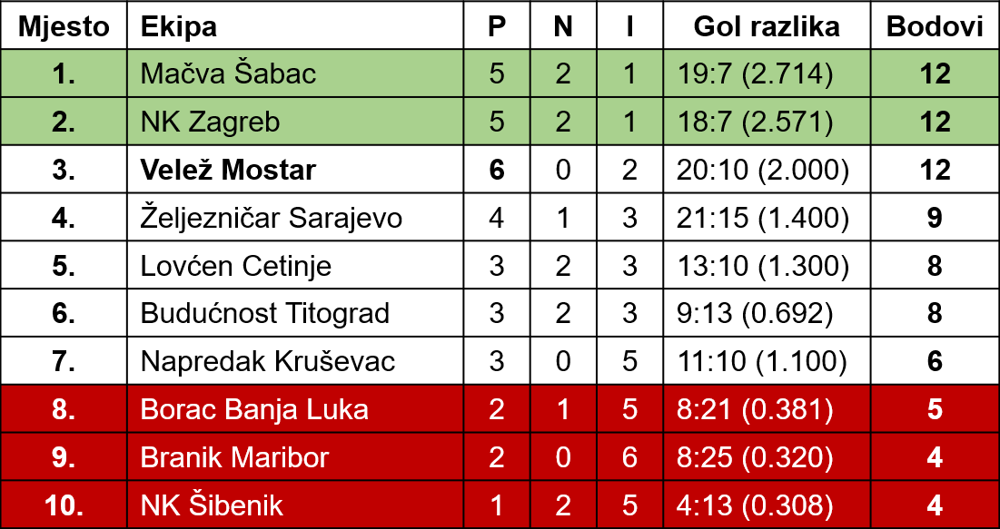
Za kraj 2 prepotrebna boda
Branik je danas opet priredio senzaciju i zaigrao protiv Veleža kao „po notama”
Nismo pogriješili u prijašnjem izdanju našeg lista, kada smo tvrdili, da je Branik vjerovatno postavio sam sebi zadatak, da svake nedelje na novo iznenadi sportsku javnost sa neobičnim rezultatima. I tako je bilo ovaj put. Iako su se Branikovi navijači u srcima možda nadali za kakvo »čudo«, oni su se ipak izvana puno žalili, da Branik ne vrijedi »prebijene pare« i ostvariti častan rezultat protiv Veleža (mora se uzeti raspoloženje Mariborčana u obzir, koje je poslije katastrofe prošle nedjelje u Kruševcu ličilo na nulu) nije nikome padao na pamet.
Ali danas su se obistinili i najbolji, najoptimističniji snovi. Branik je zaigrao kao po notama. Sa svojom igrom je iznenadio gledaoce, te i goste, koji su došli u Maribor, da odnesu dva boda, koja su im bila potrebna za osvajanje naslova jesenjeg prvaka. Mariborčani su se danas trudili, startali na svaku loptu, što je imalo za posljedicu, da su bili u premoći u svakom dijelu igre, osim par minuta tokom drugog poluvremena.
Branik nastupa sa izmjenjenim sastavom
2.500 gledalaca je toplo pozdravilo obe ekipe, koje su došle na stadion u Ljudskom vrtu u ovom sastavu: [...]
Gledaoci su bili posebno iznenađeni, jer se na krilskoj poziciji nenadano pojavio Čučko, međutim u napadu su se nakon dosta vremena pojavili Dugandžija i Vitek. Iako su prisutni na početku ovaj sastav mnogo kritikovali, poslije se iskazalo, da je imao trener Dragišević sretnu ruku pri izboru igrača ovaj put.
Od 0;1 do 5;1
Nakon što su se ekipe otresle začetne nervoze, Velež je izveo opasan napad. U 5. minuti je naime Rebac izvršio prodor po lijevom krilu, preigrao odbranu i streljao mimo presječenoga Filipančića u mrežu. Tako da Velež vodi 1:0. Ali već u 12. min. Branik izjednačuje. Iz slobodnog udarca udaljenog 20 metara Plaznik je preko živog zida zatresao mrežu. Nekoliko minuta kasnije je Plaznik opet postigao gol. Potrčao je po lijevom krilu u sjajno streljao pored nemoćnog golmana u gol. — 2:1 za Branik. Napad za napadom se dešava na vratima gostiju, koji nikako ne mogu razviti svoju igru. Većina lopti je oduzeta od Veležovih napadača od strane izuzetno raspoloženih krilnih igrača Branika, koje je odlično »dirigovao« slavljenik jubileja Gajšek. U 34. min. Norković iskorištava lijep ubačaj sa lijeve strane, i postiže treći gol za Branik. Tek pred kraj poluvremena pred golom Branika nastaje opasna situacija. Oštar šut Zelenika ide mimo pored gola u aut.
I u drugom poluvremenu Branik ima bolju igru. Krilni igrači lijepo poslužuju napad sa korisnim loptama i tako na golove nije se trebalo dugo čekati. U 60. min. cijeli napad pranika izvodi lijepu kombinaciju, koju je zaključio Dugandžija sa preciznim šutem u mrežu — 4:1 za Branik. Peti gol Branika je pao radi nesigurnosti golmana Irovića. Visoka lopta mu je u 70. min. ispala iz ruka, pa je osvojio Vitek, koji je šalje u gol.
Tek poslije ovog gola se Velež oslobodio pritiska i približno pet minuta prevladava. Napadi gostiju su neuspješni, zato što Branikova odbrana odlično igra. I Filipančić je bio u dobroj formi i predstavljao za suprotne napadače nepremostivu prepreku. Veležova ofanziva je tako bila samo kratak intermezzo. Opet prevladava Branik, ali se rezultat do zadnjeg zvižduka Zagrepčana Mikulana ne mjenja. Sudija je imao puno posla sa oštrim i na trenutke nedisciplinovanim igračima iz Mostara.
Gledaoci su zdušno pozdravili lijep i zaslužen uspjeh domaće ekipe. Igra, koju su danas pokazali Mariborčani, daje dobru nadu za drugi dio takmičenja, gdje treba napomenuti, da Branik igra u proljećnom dijelu prvenstva 5 utakmica na domaćem igralištu i to sa takvim klubovima, koji mogu biti lagano poraženi.
Dvjestota Gajšekova tekma
Gajšek je danas odigrao dvjestotu utakmicu za Branik. Gajšek je u današnjoj utakmici idilično igrao. Bio je bez dvojbe najbolji igrač na igralištu. Za Branik su također bili odlični Plaznik i Fiveši, ali moramo pohvaliti i sve druge igrače, jer u Branikovoj ekipi danas nije bilo slabe karike. Za goste najbolji igrač je bio srednji krilni Momić, dok je u napadu to bio Ćemalović.
Polet (prevedeno uz pomoć DeepL)
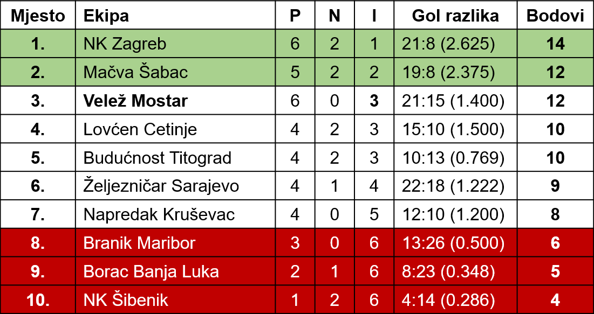
„Napredak” - „Velež” 2:1 (1:0)
U prvoj utakmici Druge savezne lige Mostarci su pretrpjeli poraz na vrućem kruševačkom terenu. Igra je počela u oštrom naletu domaćih tako da je Mostarcima trebalo dobrih desetak minuta da se malo srede. Lopta je uglavnom bila kod domaćih igrača i oni su već u četvrtoj minuti postigli voćstvo preko Mihajlovića. Još nekoliko minuta trajala je ta nadmoćnost Kruševljana, a onda su »Veležovci« počeli polako da se oslobađaju pritiska. Mostarci su počeli izvoditi lijepe kombinacije. Nadmoć je trajala do konca poluvremena. Međutim navala gostiju ispoljila je i ovog puta slabo pucanje na gol. Nijedan udarac nije bio poslan u prvih 45 minuta. »Napretkovci« su u ovom vremenu rijetko napadali ali su vrlo opasno ugrožavali gol Irovića.
Drugo poluvrijeme počelo je opet izvjesnom nadmoćnošću gostiju. Međutim, kao i u prvom poluvremenu navale su završavale pred kaznenim prostorom »Napretka«. Domaći su i pored nadmoćnosti »Veleža« postigli drugi zgoditak. U jednom duelu pali su na zemlju Momić i Mitić, ali ovaj posljednji bio je spretniji i proturio loptu slobodnom Mihajloviću, koji iz neposredne sredine postiže gol za domaće. Ostalo je još 25 minuta igre i »Veležovci« su pokušali da smanje rezultat. To im je ipak uspjelo pred kraj utakmice. Lijepo poslužen od Zelenike Hrvić se oslobodio svog čuvara i s desetak metara smanjio rezultat na 2:1. Želja za izjednačenjem natjerala je »Veležovce« da svojski zapnu ali nisu uspjeli odnijeti bod iz Kruševca.
Kod domaćih istakli su se Mihajlović i Vulić, a kod »Veleža« Zelenika i Momić.
Haldun HRVIĆ
Oslobođenje
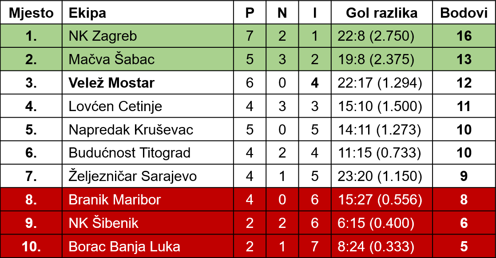
Budućnost — Velež 1:0 (1:0)
Kao u stonom tenisu
Interesovanje za utakmicu bilo je veliko ne samo u Titogradu, nego u celoj Crnoj Gori, tako da je Radio Titograd vršio prenos ove utakmice.
Još pre dva dana najvatreniji Budućnosti davali su veoma optimistične prognoze za nedeljni susret. Svakako da je to bilo bez dubljeg osnova, pošto Velež pretstavlja solidnu ekipu koju naročito oblikuju borbenost i osećanje za skupnu igru.
Iz spikerske kabine na igralištu Budućnosti stekao sam utisak da gledam utakmicu u stonom tenisu, malo neuobičajenu, jer se igralo na terenu od 100 metara. Odbranbeni igrači i jednog i drugog tima prosto su se igrali s kolegama iz protivničke navale. Stvarno, nosioci čitave igre bile su odbrane. Za njih su desetorica navalnih igrača prosto bili ono što je u stonom tenisu mreža — prostor koji treba prebaciti. Lopta je od jedne odbrane slata drugoj, a ponekad se zaustavljala oko sredine igrališta — da bi ubrzo bila vraćena odbrambenim igračima koji su se trudili da je visoko što dalje prebace na protivničko polje. I kada kažem da su odbrane iznele glavni teret, da su diktirali tempo igre, neću pogrešiti ako takođe kažem — da su one krive što je utakmica imala obeležje pimplanja.
Početak je mnogo obećavao, a utakmica nam je pružila svega jedan lep gol i mnogo loših, nervoznih i netačnih udaraca.
Budućnost je u 5 min preko Radevića dala jedini gol. Na taj način ona je osvojila dva boda i izbila na peto mesto, sa istim brojem bodova kao i četvrti Velež.
Dragan ĐORĐEVIĆ
Futbal
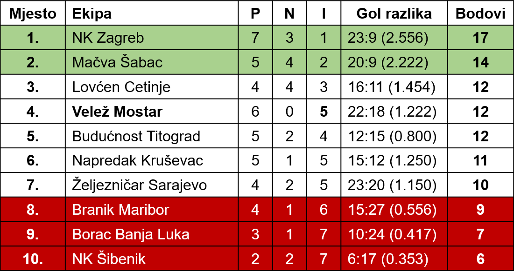
„Velež” - „Željezničar” 2:0 (0:0)
Prva dva neuspjeha »Veleža« u proljećnom dijelu takmičenja utjecala su da je kod dobrog dijela navijača zavladao izvjestan pesimizam. Ipak je igra pokazala drugo. Od samog početka zaigralo se borbeno i živo. »Velež« se prvi sređuje i njegova navala počinje opsjedati protivnički gol. Nišu se uzbudljive situacije. Opucano je mnogo lopti prema protivničkom golu, ali nije bilo sreće. Lopta je postajala plijen golmana ili je prolazila pored ili više stativa. Najzrelije šanse za postizanje golova imao je Hrvić u prvim minutama kada ga je Rebac odlično poslužio. Iza toga je Mujić tukao iz neposredne blizine, ali preko gola. U sličnoj situaciji našao se Zelenika kada je glavom prebacio loptu preko gola, a malo kasnije pored stative. Nije iskorišćena mogućnost kada je nastala gužva, pošto je golman »Željezničara« ispustio loptu.
Uglavnom se igralo na polovici terena »Željezničara«. Njegov navalni red izveo je nekoliko protivnapada, ali oni nisu bili opasni. Svaku njihovu akciju razbijala je odbrana »Veleža«.
I pored toga što je »Velež« u drugom poluvremenu igrao protiv vjetra ipak je zaigrao mnogo bolje i korisnije. Zapravo »Velež« je postao apsolutni gospodar terena. »Željezničar« se našao u poziciji branitelja. U ovom dijelu igre tim domaćih je počeo da izvodi čitavu seriju veoma opasnih napada. Vrebac I imao je mnogo posla. Uopšte uzevši »Željezničar« je imao sreću da nije doživio katastrofu, jer je izgledalo kao da se igra na jedan gol. Tek u 70 minuti dosuđen je penal protiv gostiju. Zelenika prisebno tuče i postiže gol. Iza ovoga opet »Velež« vrši silovite napade. U 73 minuti Zelenika tuče jako ali u stativu. Lopta se odbija i na nju pritrčava Mujić i postiže drugi gol. Iza toga desio se nesvakidašnji događaj na terenu. Poslije primljenog gola gosti su počeli protestovati i u jednom momentu Martinović je došao kod sudije Nikolića i neprimjetno ga udario šakom u slabine radi čega sudija nije mogao odmah nastaviti sa suđenjem. Tada je sudija izbacio Martinovića iz igre, ali se ovaj prikrio i nije htio izaći sa terena. Malo kasnije bio je primjećen od sudije i izbačen iz igre.
Do kraja igre »Velež« je izveo još mnogo napada. Postigao je i treći gol, ali ga je sudija poništio, navodno da je postignut iz ofsajda.
Na ovoj utakmici »Velež« je zadovoljio. Njegovi igrači išli su na prvu loptu i žilavo se borili. Izdržali su živ tempo igre do kraja utakmice. I ovaj susret je dokazao da »Velež« može postići dobar plasman ukoliko se svi igrači budu zalagali kao na ovoj utakmici. Izrazito slabih mjesta nije bilo. Cijeli tim je igrao poletno i borbeno.
Kroz čitavo vrijeme igralo se borbeno, ali se na momente prelazilo u grubost — nepotrebno čarkanje, udaranje i međusobno izazivanje. U tome je prednjačio Martinović i još neki igrači »Željezničara« i »Veleža«.
Sudija Nikolić imao je težak zadatak. Od početka je sjeckao igru, što je bilo potrebno ali je to stvaralo nervozu kod igrača. Nije tolerisao prednost i više je oštetio »Velež« nego goste.
U toku utakmice dosuđen je 1 penal, 14 kornera (12 protiv »Željezničara« i 2 protiv »Veleža«', 27 faulova (13 protiv domaćih i 14 protiv tima gostiju).
Mihajlo ŠAŠAROGA
Sloboda
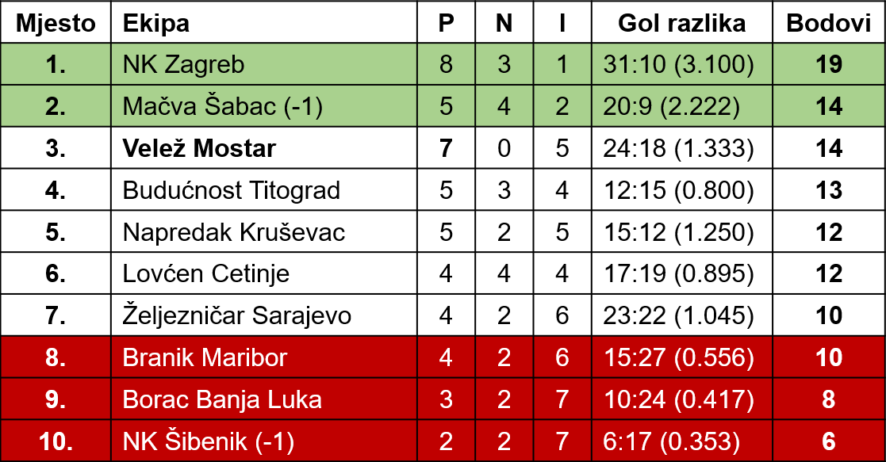
Borac — Velež 2:1 (1:1)
Još dva boda Glazerove čete
Već dve godine Banjalučani nisu imali prilike da gledaju svog starog znanca. Tada je Velež bio član Prve lige, a Borac potsavezne. Mostarci su tada igrali kudikamo bolje nego danas. Zato su Banjalučani s puno optimizma očekivali današnji derbi bosanskih ligaša i starih rivala.
Potrebni su nam bodovi...
Kada sam u subotu razgovarao s mladim Veležovim golmanom Irovićem, on mi je rekao ono što su mislili svi njegovi drugovi: „Bodovi su nam potrebni, jer ako sutra pobedimo, imamo dosta izgleda da se ponovo vratimo u društvo najboljih”.
Znači, Hercegovci su se itekako bili naoštrili za današnju borbu.
Dobra igra
Ovo vredi samo za prvih 45 minuta. Tada su i jedni i drugi igrači igrali dobro i požrtvovano, i vreme je odmicalo brzo kao da gledamo kakav uzbudljiv film. Ali, ruku na srce. Velež je čitavo pola sata ugrožavao vrata sigurnog Đukića, tako da se i pored njegove dobre igre svaki čas očekivalo da će on ipak morati da izvadi loptu iz mreže. Borac je nekoliko puta došao u povoljnu priliku da zatrese mrežu gostiju, no njegova navala nije znala da uputi loptu na pravo mesto.
Opet isključenje
Sat je pokazivao 59 min. igre kad je Novaković u jednom pokušaju da udari loptu promašio i nenamerno udario Zeleniku. Vođa navale plavih je na očigled i sudije i gledalaca namerno udario Novakovića i sudija Čolić je, na zaprepašćenje svih prisutnih, pokazao put u svlačionicu. Isključenje Novakovića, mislim prestrogo je dosuđeno. Ovo je, izgleda, prilično uticalo na sve igrače, tako da se sve do 84 min. igralo nesređeno i rastrgano, lopta se nasumice udarala kao da su svi bili zadovoljni nerešenim rezultatom. Tada je u protivničkom šesnaestercu mladi Knez iz okreta, pored iznenađenog Irovića, postigao gol. Na igralištu je tada bio pravi urnebes od zaglušive vike radosnih navijača. Nisu se mogla čuti tri poslednja zvižduka sudije, tako da su se nekoliko igrača skoro ceo minut i posle toga borili za loptu.
„Borac će ispasti”
Kad su navijači, radosni i razdragani, iznosili igrače Borca, neko je sa tribina dobacio desnom beku Veleža Dilberoviću: „Nama su bila potrebnija dva boda”. Ali je on na to zajedljivo odgovorio: „Ali ćete ipak ispasti”. Mislim da se desni bek Veleža ipak malo „zaleteo”, jer ako Borac bude i dalje igrao pažjlivo, sigurno je da će demantovati ovu njegovu izjavu ko gubi, ima pravo da se ljuti, i zato mu mnogo ne zameramo.
L. PAPIĆ
Futbal
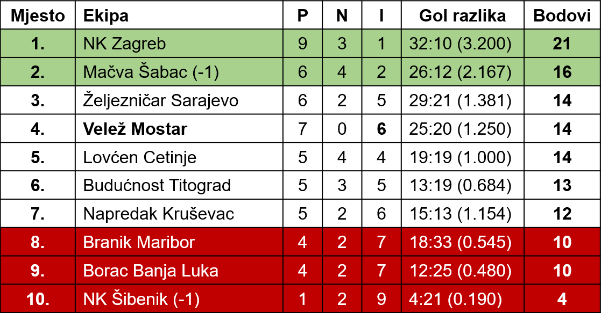
»Velež« - »Mačva« 5:0
Mnogobrojni navijači koji su posmatrali nedjeljni susret otišli su zadovoljni sa utakmice. Ovog puta »Velež« je zadovoljio. Njegovi su redovi savršeno funkcionisali. Pobjeda je rezultat borbene i efikasne igre. »Velež« je već u prvim minutama preuzeo inicijativu u svoje ruke. Njegova navala je stalno u napadu. Rebac je u 3 min bio u situaciji da postigne gol, ali je lopta otišla preko prečke. Malo zatim i Zelenika je imao sličnu šansu. Tek u 5 m. postignut je prvi gol. Zelenika se našao između dva igrača, ali je prisebno proturio loptu naprijed na koju zatim pritrčava i oštro tuče.
Iza ovoga opet »Velež« napada. Tek u 17 m., kad je Zelenika bio u povoljnoj situaciji da postigne gol bio je grubo srušen radi čega je dosuđen jedanaesterac kojeg Zelenika pretvara u gol. Golman se nije uopšte pomaknuo.
Do kraja poluvremena »Velež« dominira terenom, ali se ne povećava rezultat iako je poslano mnogo lopti na protivnički gol.
I drugo poluvreme ličilo je na prvo. »Velež« je apsolutni gospodar terena. Gosti su prisiljeni da se brane, ali nisu mogli izaći na kraj sa razigranim timom »Veleža«, koji je igrao jednostavno, korisno i borbeno. Išlo se na prvu loptu i odmah se sprovodile brze akcije prema protivničkom golu. Navalni igrači su se odlično slagali. Svaka akcija bila je opasna. Nizao se prodor za prodorom. Upućeno je mnogo lopti na gol protivnika, jer se pucalo iz svake pozicije. U 48 m. dolazi do povećavanja rezultata. Rebac je sa krila dodao loptu Mujiću a ovaj je prisebno i jako sprovodi u mrežu. Prije toga Rebac je pogodio stativu. Pet minuta kasnije Zelenika odlično poslužuje Repca, a ovaj, pošto je prešao dvojicu igrača, jako tuče u gol. To je bio veoma lijep gol. Posljednji gol postigao je Mujić iz jedne gužve u 84 m.
Za nedjeljnu utakmicu može se reći da je na njoj Velež daleko nadigrao svog protivnika i da bi rezultat od 7:0 ili 8:0 bio realniji. Gosti nisu imali šansi za postizavanje golova. U toku igre uspjeli su svega 3—4 puta da dođu do gola i jedinu su šansu imali u 40 m. kada se Ivoš našao sam pred golom.
»Veležov« tim kao cjelina odlično je igrao i kad bi na predstojećim utakmicama igrao ovako borbeno i korisno bio bi siguran kandidat za ulazak u I ligu.
Sloboda
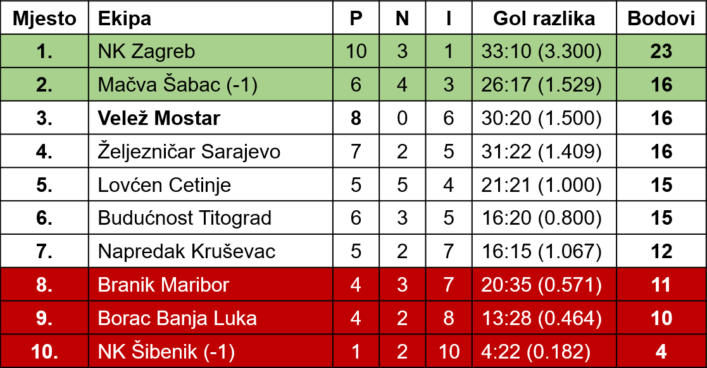
Prva neriješena igra Mostaraca
„Velež” — „Lovćen” 1:1 (1:0)
»Veležovci« su doputovali na Cetinje sa željom da odnesu dva boda i da prekinu tradiciju gubljenja utakmice na stranim terenima. Međutim, to im je samo polovično uspjelo. Nisu bili poraženi i odnijeli su jedan bod. Mostarcima nije uspjelo kao ni jednom dosada drugom ligašu da sa Cetinja odnese oba boda. Utakmica je počela mirno s obje strane. »Veležovci« su ipak prvi ugrozili gol domaćih. Navala »Veleža« igrala je u početku jednostavno, a samo nekoliko minuta poslije prvog sudijinog zvižduka Selimotić je pogodio stativu. Isti igrač je u toku prvog poluvremena bio u sličnim situacijama još dva puta, ali je mreža »Lovćena« ostala netaknuta. Odbrana Mostaraca igrala je u prvom poluvremenu brzo i sigurno, nije dopuštala igračima »Lovćena« da slobodno pucaju na vrata Irovića. Samo je jedanput desna polutka domaćih bila u idealnoj prilici da postigne zgoditak, ali je lopta otišla preko stative. U drugom poluvremenu »Veležovci« su krenuli još borbenije u napad. Punih deset minuta trajala je opsada »Lovćenovog« gola. Jedna brza kombinacija navalnog reda Mostaraca završila se zgoditkom kada je Mujić sa 18 metara oštro šutirao u desni ugao. Poslije toga »Velež« je igrao još mirnije i sigurnije, ali samo zahvaljujući nepreciznosti svoje navale i vrlo brzim intervencijama uže odbrane »Lovćena« rezultat je ostao sve do 85 minuta nepromijenjen. Ni Cetinjani nisu mirovali.
Iako je »Velež« nastavio igru nešto defanzivnije, u želji da očuva rezultat, domaći su dugačkim loptama često ugrožavali gol protivnika. I baš iz jedne takve gužve desno krilo Vrbica uspjelo je da ubaci loptu u mrežu »Veleža«, dok su se golman i još dva odbranbena igrača nalazila na zemlji.
Utakmica je inače bila vrlo brza, oštra i interesantna. Kod »Veleža« igrali su vrlo dobro Mujić, Zelenika, Radiljević i Momić, a kod domaćih Pajević, Lubarda i Ivanović.
Na utakmicu je doputovalo kamionima oko 250 Mostaraca, koji su bodrili svoj tim.
Haldun HRVIĆ
Oslobođenje
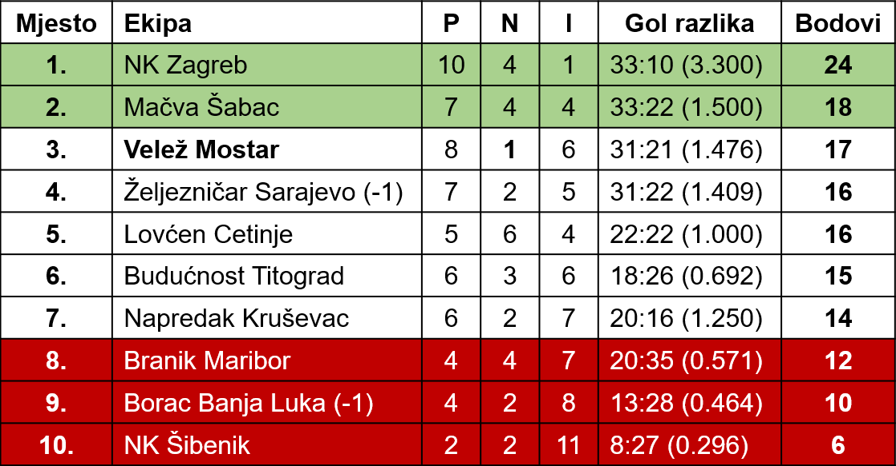
Ubjedljiva pobjeda ekipe Mostaraca
„Velež” „Zagreb” 3:0
Prema početku igre teško je bilo predvidjeti pobjednika. Obadvije ekipe počele su mlako i igra je bila prilično rastrgana, kao da se ne igra prvenstvena utakmica. Tek poslije 20 m. »Velež« se donekle sređuje i počinje da ugrožava gol gostiju. Zelenika je jednom prilikom jako tukao, a malo zatim i Mujić, ali pored gola. Slične šanse ponovile su se nekoliko puta.
Domaći nisu igrali prema svojim mogućnostima. Odbrana je bila sigurna i na vrijeme je intervenisala, dok je navalni red podbacio. Akcija je bilo dosta, ali navalni red nije pokazao dovoljno snalažljivosti da svoju nadmoćnost realizuje u golovima. Oni nisu igrali homogeno. Pravili su početničke greške. Slabo su dodavali jedan drugom i nisu se dovoljno zalagali. Odbrana gostiju bez većih napora uspjela je da osujeti svaku akcciju domaćih.
Drugo poluvrijeme nije naličilo na prvo. Ovog puta su domaći zaigrali borbenije. Počeli su sa jakim prodorima. Ali, ni tada, nisu pokazali dovoljno umješnosti. U polju su dobro igrali, ali u završnicama su mnogo griješili. Tek u 50 minuti Zelenika jako tuče na gol. Lopta se odbija no Zelenika opet pritrčava i postiže gol. Poslije toga tim domaćih izvodi niz akcija. Zagreb se uglavnom brani. U 78 m. dosuđen je korner u korist domaćih. Rebac vrlo lijepo tuče i lopta u luku pada pred sam gol, sama skreće u mrežu. Ovakav gol se može rijetko vidjeti na futbalskim terenima. Pred sam kraj igre Rebac opet dolazi do lopte. On prelazi trojicu igrača i prisebno ali vrlo jako tuče i postiže gol sa 16 m.
Pobjeda je izvojevana zasluženo i pored toga što »Velež« nije igrao kako treba. Odbrana je bila bolji dio tima. Srednji red je podbacio, a navala je mnogo griješila. Momić je bio najbolji na terenu. Dilberović i Rukavina su zadovoljili. Radiljeviću nije ništa polazilo za rukom. Rebac je igrao defanzivno i vrlo slabo. Iskupio se postignutim golovima. Selimotić se zalagao ali nije bio koristan. Mujić je igrao dobro. Zelenika, Hrvić i Bolfek nisu zadovoljili. Sve u svemu, tim kao cjelina, i pored pobjede, mnogo je razočarao. Nije bilo homogene i kolektivne igre i zalaganja. Za ovu igru moglo bi se reći da nije ni sjenka onoj igri koju su pokazali protiv Mačve.
Mihajlo ŠAŠAROGA
Sloboda
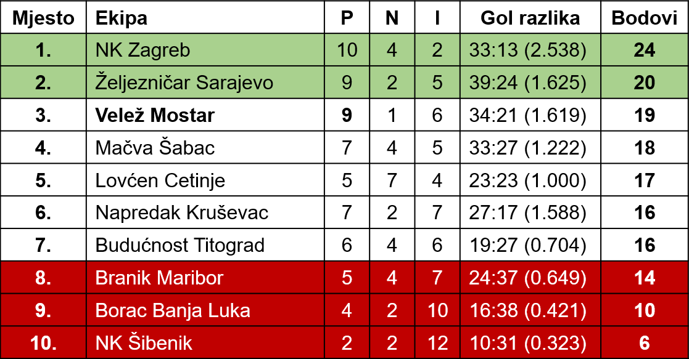
»Šibenik« izgubio protiv »Veleža« 3:1
Danas je u Šibeniku odigrana predposljednja utakmica Druge savezne lige između »Šibenika« i »Veleža« iz Mostara i ujedno posljednja utakmica Druge savezne lige u Šibeniku. Da li će Šibeničani bar u doglednoj budućnosti imati priliku da na svom terenu ponovno vide drugoligaše veliko je pitanje.
Već u samom početku igre gosti su preuzeli inicijativu i dominirali terenom prvih deset minuta. »Velež« je svim silama i pod svaku cijenu htio pobjedu. Njegovi igrači neprestano su vršili napade na vrata domaćih, koje su bekovi lakoćom otklanjali. Danas su Šibeničani imali prilike da u I. poluvremenu vide jednu zaista vrlo dobru utakmicu. Pred kraj prvog poluvremena igrači »Veleža« igrali su sa dosta nervoze a tim više kad su njihove akcije ostale bez rezultata. Na mahove ispoljavali su nešto oštriju igru, koja im nije donijela nikakvog rezultata.
U drugom vremenu u samom početku »Velež« mijenja taktiku i svim snagama opsjeda vrata domaćih. Šibeničani su nesređeno igrali i već u 49. minutu preko Zelenike gosti postižu prvi zgoditak, a nakon 3 minuta odnosno u 51. minutu Mujić povisuje rezultat na 2:0. Šibenčani ne uspijevaju srediti svoje redove. Igrači »Veleža« to koriste i vrše stalne napade. Iz jednog dosuđenog kornera u 60. minutu Cvitanović postiže jedini gol za Šibenik, a u nastavku igre u 65. minutu Mujić postiže treći zgoditak za »Veleža«.
Najbolji igrači kod »Veleža« bili su Rebac, Zelenika i Mujić, a kod domaćih Bašić, Tambača i Zorić.
M. M.
Slobodna Dalmacija
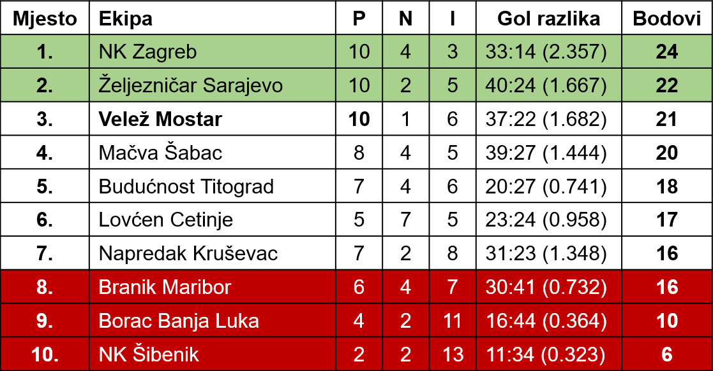
Velež - Branik 4:0 (4:0)
Početak igre pripada gostima. Oni su nastojali da već u prvim minutama dođu do pobjede. Zaigrali su borbeno, smišljeno i dopadljivo. U tom dijelu igre osjetila se neka nesigurnost kod tima domaćih. »Velež« se uglavnom branio. Irović je imao mnogo posla. Uspješno je odbranio dva opasna šuta. U jednoj prilici dvojica protivničkih igrača uspjeli su se probiti i ostaviti »Veležovu« odbranu za svojim leđima. Bila je bezizlazna situacija, ali je Irović u jednom skoku uspio da odbrani jak šut. Slično se ponovilo poslije nekoliko minuta. Malo kasnije Irović je istrčao i lopta je pošla u prazan gol, ali u zadnjem momentu Rukavina pritrčava i izbacuje loptu u polje.
Onda, kada je »Branik« dominirao terenom, »Velež« izvodi jednu akciju. Mujić dodaje loptu Hrviću, a ovaj Zeleniki koji proigrava dvojicu protivničkih igrača i najposlije golmana te postiže gol.
I pored primljenog gola gosti ne polažu oružje. Oni igraju istim tempom, nastojeći da poprave stanje. Ali opet »Veležova« navala izvodi akciju. Mujić nabacuje loptu u centar na koju pritrčava Zelenika i glavom je sprovodi u mrežu.
Tek iza ovog gola »Velež« se sređuje i počinje da izvodi seriju napada. Oko 25 minuta domaći su bili apsolutni gospodari terena. Svi su redovi odlično funkcionisali. U 37 minuti, poslije jedne akcije, Hrvić je grubo srušen u kaznenom prostoru protivnika. Dosuđen je penal, kojeg Zelenika pretvara u gol.
Postignuta su još dva gola, ali ih sudija nije priznao navodno da su podignuta iz ofsajda. Pri kraju prvog poluvremena, opet Mujić, koji je inače bio inicijator svih akcija, nabacuje jednu poluvisoku loptu pred gol koju Hrvić glavom sprovodi u gol.
Za drugo poluvrijeme može se reći da je igra bila neinteresantna i slaba. »Velež« je igrao konfuzno, dok su se gosti žilavo borili nastojeći da poprave rezultat. Oni nisu ni jednog časa popuštali u tempu. Bila je simpatična njihova upornost, zalaganje i nastojanje da poprave rezultat. Oni su izveli nekoliko uspjelih prodora, ali nisu imali mnogo sreće, jer u završnicama nisu pokazivali mnogo umješnosti, a i dobrim dijelom »Veležova« odbrana uspjela je da na vrijeme interveniše.
Opšte uzevši, »Velež« nije igrao prema svojim mogućnostima. Izgleda da se zadovoljio postignutim rezultatom u prvom poluvremenu, pa se nisu zalagali u drugom dijelu igre. Najbolji su bili u timu pobjednika: Momić, Mujić i Zelenika, a najslabiji Slišković i Rebac. Kod gostiju istakao se srednji red.
Poslije ove utakmice »Velež« je zauzeo treće mjesto, sa jednim bodom manje od prvo i drugoplasiranih na tabeli druge Savezne lige. Dakle, »Velež« je ostao u istoj ligi, no sa novim iskustvom, pa već sada treba vršiti svestrane pripreme za buduća takmičenja, kako bi iduće godine ušli u red najboljih timova naše zemlje.
Mihajlo ŠAŠAROGA
Sloboda
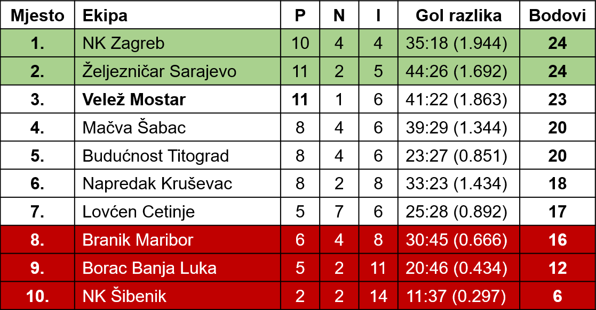
Velež — Partizan 0:4 (0:1)
Već u prvom minutu Milutinović prelazi tri Veležova igrača i šalje opasan šut na Veležov gol. Odmah zatim Velež izvodi protivnapad i potpuno preuzima inicijativu u svoje ruke. Nižu se akcije prema Stojanovićevom golu. Već u 4 min. Borozan šalje loptu u kazneni prostor gde se stvara gužva, ali Stojanović smelim skokom spasava gol izbacivanjem lopte u korner. Odmah zatim opet je Velež u napadu i Zelenika šutira. Loptu dodiruje Stefanović i ona dolazi do slobodnog Rebca koji tuče pored gola. Minut kasnije ponavlja se slična situacija, ali ovoga puta Stefanović uspešnije interveniše.
Neočekivani golPosle 25 minuta Partizan se konačno sređuje. Do tog vremena Veležova navala nije znala da iskoristi nadmoćnost. Njegovi igrači pravili su početničke greške. Stojanović se tri puta našao u veoma kritičnoj situaciji, ali je uspešno intervenisao i tako uspeo da spase svoja vrata. Posle toga Partizan brzim prodorima vrlo često dolazi pred Barbarićev gol. U jednom momentu stvorila se gužva pred golom, pritrčao je Milutinović, ali Barbarić je intervenisao i prosto neverovatnim skokom uspeo da uhvati loptu. U 30 minutu došlo je da igralištu do jedne veoma ružne slike. Borili su se Zelenika i Stefanović. Kada je Stefanović oduzeo loptu, Zelenika ga je bezobrazno udario po nogama. Poslednji minuti prvog poluvremena pripadali su Partizanu, ali ni njegova navala nije uspela da realizuje sve napore. U nastavku igre već u prvim minutima opet greškom levog beka, lopta je došla do Veselinovića koji se našao oči u oči sa Barbarićem. On je ispod njega poslao loptu u mrežu sa skoro 20 metara.
Gruba igraPosle ovoga, pa do završetka, nije više bilo lepe igre i uzbudljivih situacija. Igrači su se međusobno čarkali i otvoreno udarali. Igralo se grubo. Ispadi pojedinih igrača bili su nesportski. U jednom momentu Čajkovski je zajaukao, izgledao je kao da je udaren, iako to nije bio. On je simulirao i zato je bio izviždan od publike. Malo zatim gosti iznenada povećavaju rezultat. U 52 minutu Barbarić izbacuje loptu, ali veoma kratko. Do lopte je došao Milutinović i razumljivo loptu je vratio u prazan gol. Trinaest minuta kasnije dosuđen je penal protiv Veleža koji je pretvoren u gol. Pri kraju igre grubo je srušen Hrvić pred Partizanovim golom. Igra je prekiinuta. Dok je lekar intervenisao, sudija je na zaprepašćenje publike nastavio igru iako je na terenu bilo i neigrača.
Sve u svemu nijedan tim nije ispunio očekivanja. Velež nije igrao kako zna niti je njegova ekipa pružila uobičajenu borbenost.
Partizan je ovoga puta razočarao Mostarce gde je prvi put igrao od 1946 godine. Njegovi najbolji igrači, inače naši poznati reprezentativci, nisu pokazali ono što znaju, a tim kao celina igrao je veoma mlako i rastrgano.
Sudija Makijedo na kraju igre bio je prisiljen da isključi Dilberovića zbog ispada.
Šefik PAŠIĆ
Sport
„Velež“ iznenadio BSK-a sa 4:2 (2:2)
Poletnom igrom »Velež« je danas zasluženo pobijedio »BSK« sa 4:2 (2:2). [...]
Mada klizav teren od pljuska, koji je trajao neprekidno dva sata prije utakmice nije dozvoljavao da se razvije lijepa igra, za današnju utakmicu između »BSK-a« i »Veleža« može se reći da je bila vrlo interesantna. Još u početku obje ekipe snažno navaljuju u namjeri da osiguraju pobjedu. Iako Marković postiže gol u osmom minutu, Zelenika izjednačuje u 12. minuti. Poslije toga BSK opet prelazi u vodstvo preko istog igrača u 35. minuti, ali u 44. minutu Zelenika izjednačuje na 2:2 iz jedanaesterca koji je skrivio Stanković.
Drugo poluvrijeme proteklo je u znatnoj nadmoćnosti »Veleža«, koji je uspio da u 48. minuti preko Mujića i u 78. minuti preko Selimotića poveća rezultat na 4:2. U ovom dijelu igre gosti su prikazali odličnu igru. Domaći su vrlo rijetko uspijevali da dođu do gola »Veleža« na kome se nalazio vrlo dobar golman Barbarić. U timu »Veleža« nije bilo slabih mjesta, a najbolji su bili pored Barbarića Borozan, Bolfek i Zelenika. Za požrtvovanu i dobru igru Beograđani su srdačno nagradili goste aplauzom. U timu »BSK-a« nitko se nije naročito istakao.
Slobodna Dalmacija
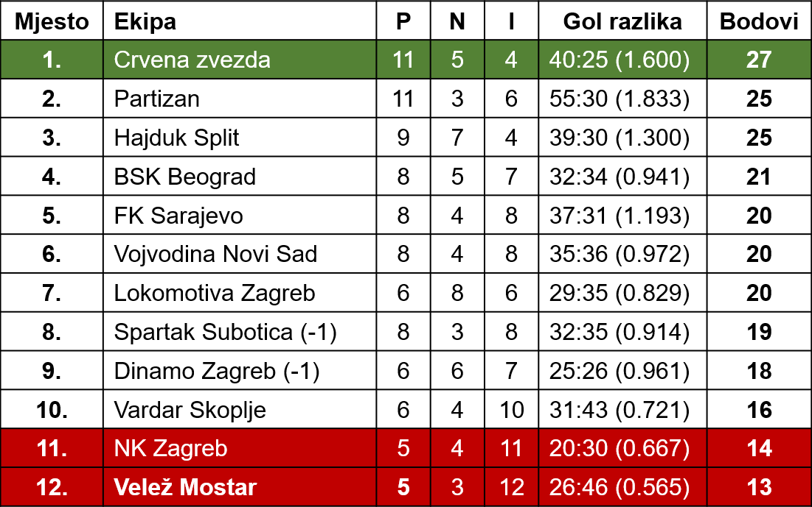
Velež - Spartak 2:0
Poslije nedeljne utakmice navijači su zadovoljno napustili teren. Kako i ne bi kad je njihov ljubimac odnio još jednu pobjedu. To je bila teška borba po blatnjavom terenu. Veležovci su zaigrali kao nikada do sada. Mladi tim dao je sve od sebe. Igrao je jednostavnije i korisnije. Rezultat takve igre ispoljio ce u golovima. Ovog puta znali su iskoristiti povoljne situacije.
»Spartak« nije bio loš tim, već naprotiv veoma dobar, borben sa odličnom kondicijom i ostalim odlikama jedne iskusne ekipe. Ipak oni nisu imali uspjeha. Igrali su dobro u polju, ali kad se takva igra trebala realizovati njihova navala je u završnicima pravila grube greške. Mnogo su kombinovali, a to im se osvetilo. Takač, Palatinos, Branisavljević i još neki drugi imali su pogodnih situacija da postignu gol, ali su uvijek oklijevali.
Odbrana »Veleža« ispunila je časno svoj zadatak. Momić je bio stub svog tima i ujedno najbolji na terenu. Barbarić nije imao mnogo posla, ali je odbranio dvije opasne lopte. Bolfek je podbacio. Izgleda da mu nije odgovaralo mjesto beka. Rukavina je bio siguran, ali mu se može zamjeriti što je ostavljao protivničko krilo. Borozan nije ispunio očakivanja koja su se od njega očekivala. Radiljević je položio ispit. Bio je siguran i uz Momića najbolji u svom timu. Za Sliškovića ce može reći da napreduje i da će to biti efikasno i korisno krilo. Mujić, Zelenika, Hrvić i Ćemalović dobro su se slagali i znali su da opasno ugrožavaju protivnički gol. Tim kao cjelina igrao je dobro.
Ovom pobjedom dokazao je tim »Veleža« da nije bio »zreo« za ispadanje i da je tvrd orah i za naše najbolje timove. Sve šanse nisu izgubljene. Ukoliko bi tukli »Vardara« u Skoplju sa nekoliko golova razlike bilo bi mogućnosti da ostane u ligi najboljih. Bilo kako, smatramo da će se igrači »Veleža« dostojno boriti i na posljednjoj utakmici, onako kako to znaju. To očekuje sportska javnost Mostara i Hercegovine.
Sloboda
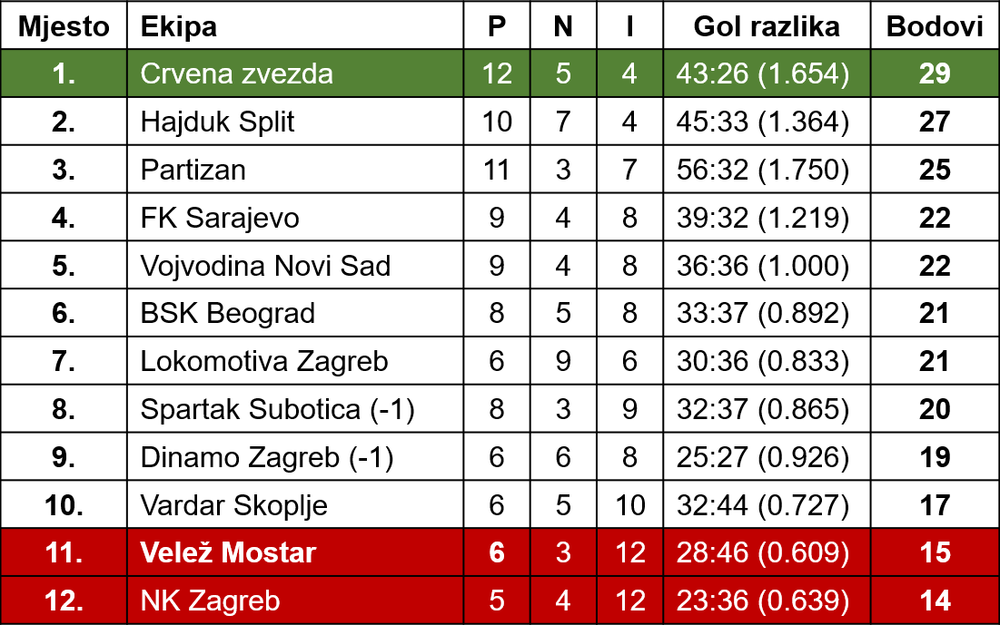
Utakmica odlučena u prvim minutima
„Vardar” — „Velež” 5:2 (2:0)
Već u prvim minutima igre videlo se da će tim „Vardara” odneti pobedu. Igrači „Vardara” su počeli silovitim napadima, bez uobičajene nervoze. Nasuprot njima igrači „Veleža” zaigrali su bolje tek pri kraju drugog dela igre. Njih je možda u početku igre demoralisao prvi gol koji je postignut već u 5 minutu. Dao ga je Velkovski. On je sa tridesetak metara pogodio gornji desni ugao i iznenadio inače odličnog Barbarića. U 24 inutu Karamfilović je lako pored palog Barbarića poslao loptu u mrežu.
U drugom delu „Vardar” počinje sa silovitim napadima i već u 2 minutu Karamfilović dodaje Velkovskom, koji je prodro do gol-aut linije i centrirao previsoko Cincijevski je vešto prevario i Barbarića i centarhalfa „Veleža” propustivši loptu slobodnom Georgijevski II, koji je bez oklevanja povećao na 3:0. Od ovog momenta igrači „Vardara” počinju da igraju ležerno. Kao plod ovakve igre „Vardara” došla su dva gola Zelenike. Četvrti gol za „Vardar” postigao je Velkovski, a peti gol bio je autogol Bolfeka. Pobeda Vardara je zaslužena.
B. BLAGOJEVSKI
Borba
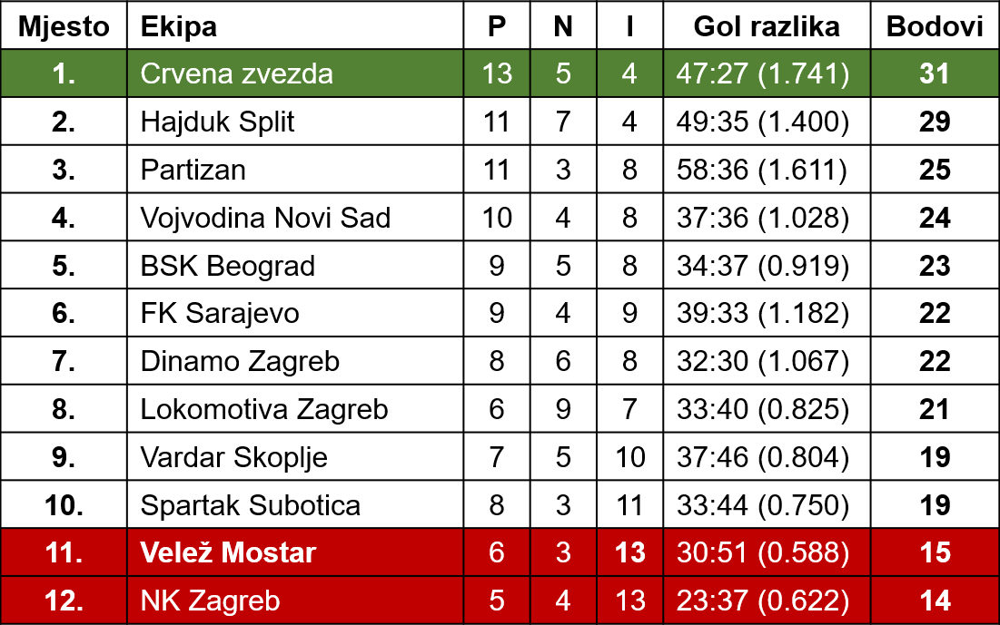
Druga savezna liga